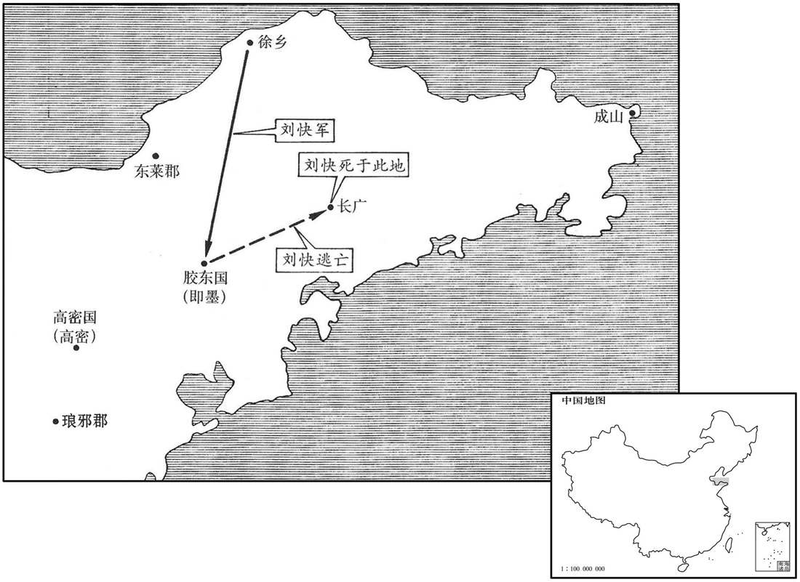

公元9年资治通鉴：本年记事、原文与白话对照
按原书编年位置阅读；追叙和史论不等于本年发生的事件。白话采用所据译本，缺译不以生成译文补齐。
卷37 · 本年记事
公元9年 · 汉孝平皇帝始建国元年
始建国元年〔（己巳、九）〕
上传原文的注释括号有异常，字符原样保留；无法可靠划分的段落默认全文显示。
本年事件索引（现代整理）
- 王莽改汉国号为新，自称受命改朝换代
- 王莽立王氏女为皇后，大赦天下
- 王莽封孺子婴为定安公，令其终身奉汉祀
- 王莽依伪符命分封四辅、三公、四将，亲信与市井之徒并获高位
- 王莽将孺子婴幽禁于定安馆，严禁其与外人交谈
- 王莽更改百官、郡县、宫室等名号，旧制尽改
- 王莽按丧服亲疏分封王氏亲属
- 王莽将诸侯王与四夷王号一律降为公、侯
- 王莽追封古帝王后裔以延续祭祀
- 王莽自称黄帝、虞舜后裔，并立宗庙奉祀
- 王莽封赏州牧、郡守以稳固地方
- 王莽保留汉高庙与刘氏宗族的部分待遇
- 王莽禁用刚卯、金刀及五铢钱，另造小钱、大钱
- 徐乡侯刘快起兵反莽，兵败身死
- 王莽推行王田、私属制，禁止土地与奴婢买卖
- 王莽派五威将颁布符命、印绶并改易四夷王号
- 五威将更换匈奴单于印绶，全面颁行新朝名号
- 冬季无故打雷，桐树开花
- 王莽设置司命监察上公，并增设四关将军

本年形势与背景参考图
春，正月，朔，〔去年十二月莽改元，以十二月为岁首。通鉴不书，不与其改正朔也。〕莽帅公侯卿士奉皇太后玺韨，〔帅，读曰率。玺，斯氏翻。师古曰：韨，谓玺之组；音弗。〕上太皇太后，顺符命，去汉号焉。〔上，时掌翻。去，羌吕翻。〕
春季，正月朔（初一），王莽率领公侯卿士捧着新制的皇太后御玺，呈上太皇太后，遵从上天的符命，去掉汉朝的名号。
初，莽娶故丞相王欣孙宜春侯咸女为妻，〔师古曰：王欣为为丞相，初封宜春侯，传爵至孙咸。恩泽侯表：宜春侯，国于汝南。〕立以为皇后；生四男，宇、获前诛死，安颇荒忽，〔师古曰：荒，音呼广翻。〕乃以临为皇太子，安为新嘉辟。〔师古曰：辟，君也。谓之辟者，取为国君之义。辟，音壁。〕封宇子六人皆为公。〔千为功隆公，寿为功明公，吉为功成公，宗为功崇公，世为功昭公，利为功着公。〕大赦天下。
当初，王莽娶了原丞相王的孙子宜春侯王咸的女儿为妻，如今立她作皇后。生有四个儿子，王宇、王获先前已被处死，王安又很有点糊里糊涂的样子，便把王临立为皇太子，把王安封为新嘉辟。赐封王宇的儿子六人都为公。大赦天下。
莽乃策命孺子为定安公，封以万户，地方百里；立汉祖宗之庙于其国，与周后并行其正朔、服色；〔此皆空言耳。〕以孝平皇后为定安太后。读策毕，莽亲执孺子手，流涕歔欷〔师古曰：歔，音虚。欷，音许气翻，又音希。〕曰：「昔周公摄位，终得复子明辟；今予独迫皇天威命，不得如意！」哀叹良久。中傅将孺子下殿，北面而称臣。〔汉诸侯王国，有太傅、中傅：太傅秩二千石，中傅则在宫中傅王者耳。贤曰：前书音义曰：中傅，宦者也。〕百僚陪位，莫不感动。
王莽下策书命孺子为定安公，把居民一万户，土地纵横各一百里，赐封给他。在封国里建立汉朝祖宗的祠庙，与周朝的后代一样，都使用自己的历法和车马服饰的颜色。把孝平皇后立为定安太后。宣读策书完毕，王莽亲自握着孺子的手，流着眼泪抽泣道：“从前周公代理王位，最后能够把明君的权力归还周成王；现在我偏偏迫于上天威严的命令，不能够如自己的意！”悲伤叹息很久。中傅带着孺子下殿，向着北面自称臣下。百官陪在旁边，没有人不受感动。
又按金匮封拜辅臣：〔哀章所献金匮图、金策书也。〕以太傅、左辅王舜为太师，封安新公；大司徒平晏为太傅，就新公；少阿、羲和刘秀为国师，嘉新公；广汉梓潼哀章为国将，美新公；〔梓潼县，时属广汉郡。将，即亮翻；下同。〕是为四辅，位上公。太保、后承甄邯为大司马，承新公；丕进侯王寻为大司徒，章新公；步兵将军王邑为大司空，隆新公；是为三公。太阿、右拂、大司空甄丰为更始将军，广新公；京兆王兴为卫将军，奉新公；轻车将军孙建为立国将军，成新公；京兆王盛为前将军，崇新公；是为四将。凡十一公。王兴者，故城门令史；〔城门令史，事城门校尉，掌文书。〕王盛者，卖饼；〔释名：饼，并也，溲麦使合并也。蒸饼、汤饼之属，随形而名之。〕莽按符命求得此姓名十余人，两人容貌应卜相，〔相，息亮翻。〕径从布衣登用，以示神焉。
王莽又按照金匮图书的说明，对辅政大臣举行授任仪式：任命太傅、左辅王舜为太师，赐封安新公；大司徒平晏为太傅，赐封就新公；少阿、羲和、刘秀为国师，赐封嘉新公；广汉郡梓潼县人哀章为国将，赐封美新公。这是四辅，位列上公。太保、后承甄邯为大司马，赐封承新公；丕进侯王寻为大司徒，赐封章新公；步兵将军王邑为大司空，赐封隆新公。这是三公。太阿、右拂、大司空甄丰为更始将军，赐封广新公；京兆王兴为卫将军，赐封奉新公；轻车将军孙建为立国将军，赐封成新公；京兆王盛为前将军，赐封崇新公。这是四将。总共十一公。王兴原是城门令史，王盛是卖饼的。王莽按照符命，找到十多个有这样姓名的人，而这两人的相貌符合占卜和看相的要求，便直接从平民起用，以显示神奇。
是日，封拜卿大夫、侍中、尚书官凡数百人，诸刘为郡守者皆徙为谏大夫。改明光宫为定安馆，定安太后居之；以大鸿胪府为定安公第；皆置门卫使者监领。〔胪，陵如翻。监，工衔翻。〕敕阿乳母不得与婴语，常在四壁中，〔孟康曰：令定安公居四壁中，不得有所见。汉官典职曰：省中皆胡粉壁，紫素界之，画古烈士。释名曰：壁，辟也，辟御风寒也。〕至于长大，不能名六畜；〔长，知两翻。六畜，牛、马、羊、犬、豕、鸡也。养之曰畜；用之曰牲。畜，音许救翻。〕后莽以女孙宇子妻之。〔莽长男宇之子，则女孙也。妻，七细翻。〕
这一天，授任卿大夫、侍中、尚书官职总共几百人。各刘姓皇族担任郡太守的，都调任谏大夫。王莽把明光宫改为定安馆，让定安太后住在那里。把大鸿胪官署作为定安公住宅，都设置门卫、使者监护管理。告诫保育人员和奶妈不准跟定安公谈话，让他常在四壁合围的屋子里。一直到长大，定安公还不能叫出六畜的名称。后来王莽把孙女王宇的女儿嫁给了他。
莽策命群司各以其职，如典诰之文。置大司马司允、大司徒司直、大司空司若，位皆孤卿。〔师古曰：允，信也。若，顺也。余按古之三孤位六卿，爵秩同六卿曰孤卿。〕更名大司农曰羲和，后更为纳言；〔更，工衡翻；下同。〕大理曰作士；太常曰秩宗；大鸿胪曰典乐；少府曰共工；〔师古曰：共，音恭。〕水衡都尉曰予虞：〔皆放唐、虞建官也。〕与三公司卿分属三公。〔司卿，即司允、司直、司若。〕置二十七大夫，八十一元士，分主中都官诸职。又更光禄勋等名为六监，皆上卿。〔光禄勋曰司中，太仆曰太御，卫尉曰太卫，执金吾曰奋武，中尉曰军正。又置大赘官，主乘舆服御物；后又典兵。〕改郡太守曰大尹，都尉曰大尉，县令、长曰宰；〔守，式又翻。长，知两翻。〕长乐宫曰常乐室，〔乐，音洛。〕长安曰常安；其余百官、宫室、郡县尽易其名，不可胜纪。〔胜，音升。〕
王莽颁发策书规定百官的职责，犹如典谟训诰的文章一样。设置大司马司允、大司徒司直、大司空司若，职位都是孤卿。将大司农改名叫羲和，后来又改为纳言；大理改名叫作士；太常改名叫秩宗；大鸿胪改名叫典乐；少府改名叫共工；水衡都尉改名叫予虞，加上三公司卿，分别归三公管辖。设置二十七大夫、八十一元士，分别主管京师各官府的所有职务。又把光禄勋等改名，称为六监，职位都是上卿。将郡太守改名叫大尹，都尉改名叫大尉，县令、县长改名叫宰；长乐宫改名叫常乐室，长安改名叫常安；其余百官、宫室、郡县都改了名，不能一一记录了。
封王氏齐缞之属为侯，〔齐，音咨。缞裳而缏其下。缞，仓回翻。〕大功为伯，小功为子，缌麻为男；其女皆为任。〔师古曰：任，充也。男服之义，男亦任也；音壬。〕男以「睦」，女以「隆」为号焉。〔师古曰：睦、隆，皆其受封邑之号，取嘉名也。〕
赐封王氏丧服为齐的亲属为侯爵，丧服为大功的亲属为伯爵，丧服为小功的亲属为子爵，丧服为缌麻的亲属为男爵；这样的女亲属都为任爵。男的用“睦”字作称号，女的用“隆”字作称号。
又曰：「汉氏诸侯或称王，至于四夷亦如之，违于古典，缪于一统。〔王大一统。王者，有天下之号也。诸侯及四夷称之，非古也。缪，戾也。〕其定诸侯王之号皆称公，及四夷僭号称王者皆更侯。」于是汉诸侯王三〔【章：十二行本「三」作「二」；乙十一行本同；孔本同；退斋校同。】〕十二人皆降为公，王子侯者百八十一人皆降为子，其后皆夺爵焉。〔考异曰：诸侯王表，皆云「莽篡位，贬为公。明年，废。」王子侯表但云「绝」，或云「免」，皆在今年。按明年立国将军建奏诸刘为诸侯者以户多少就五等之差，亦不云夺爵也。后汉城阳王祉传云：「刘氏侯者皆降为子，后夺爵。」不知夺在几年。〕
王莽又说道：“汉朝有的诸侯称王，以至四方的夷民也仿效这样称呼，这违反了古代制度，背离了一统的原则。如今确定诸侯王的名号都称为公，以及四方夷民，冒用帝王尊号的都改为侯。”于是汉诸侯王三十二人的名号都降为公，诸侯王的子弟名号为侯的一百八十一人都降为子，他们在后来都被剥夺了爵号。
莽又封黄帝、少昊、颛顼、帝喾、尧、舜、夏、商、周及皋陶、伊尹之后皆为公、侯，使各奉其祭祀。〔姚恂为初睦侯，奉黄帝后。梁护为修远伯，奉少昊后。皇孙功隆公千，奉帝喾后。刘歆为初烈伯，奉颛顼后。国师刘歆子迭为伊休侯，奉尧后。妫昌为始睦侯，奉虞帝后。山遵为褒谋侯，奉皋陶后。伊玄为褒衡子，奉伊尹后。周后卫公姬党更封为章平公。殷后宋公孔弘更封为章昭侯。夏后辽西如丰封为章功侯。〕
王莽又赐封黄帝、少昊、颛顼、帝喾、尧、舜、夏、商、周及皋陶、伊尹的后代都为公、侯，使他们各自奉行对自己祖先的祭祀。
莽因汉承平之业，府库百官之富，百蛮宾服，天下晏然，莽一朝有之，其心意未满，〔未满，未餍足也。〕莅小汉家制度，欲更为疏阔。〔欲变改制度以从古也。莅，与狭同。更，工衡翻。〕乃自谓黄帝、虞舜之后，至齐王建孙济北王安失国，齐人谓之王家，因以为氏；故以黄帝为初祖，虞帝为始祖。追尊陈胡公为〔【章：十二行本「为」作「曰」；乙十一行本同；孔本同。】〕陈胡王，田敬仲为田敬王，〔【章：十二行本「为田」二字作「曰齐」二字；乙十一行本同；孔本同。】〕济北王安为〔【章：十二行本「为」作「曰」；乙十一行本同；孔本同。】〕济北愍王。〔以黄帝之后分为有虞氏，有虞之后封于陈，田敬仲自陈奔齐，为田氏，田安之后为王家故也。济，子礼翻。〕立祖庙五，亲庙四。天下姚、妫、陈、田、王五姓皆为宗室，世世复，无所与。〔复，方目翻。与，读曰豫；下其复同。〕封陈崇、田丰为侯，以奉胡王、敬王后。
王莽承接汉朝盛世的庞大基业，以及国库和诸官府资产的丰厚，众多蛮族归附顺从，天下一派升平。王莽一时攫为己有，他的心意仍不满足，认为汉朝的格局太小，想要更为宏大。于是，自称是黄帝、虞舜的后裔，一直传到齐王田建的孙儿济北王田安，才失去政权。齐人称齐国的王族为“王家”，于是就以“王”为姓氏。所以，以黄帝为王姓的初祖，以虞舜帝为始祖。王莽追尊陈胡公为陈胡王，田敬仲为田敬王，济北王田安为济北愍王。他建造五座祖宗祭庙，四座皇族祭庙。天下姚、妫、陈、田、王五姓都是皇族，世代不纳税，不服役，不负担义务。封陈崇、田丰二人为侯爵，使他们分别作陈胡王妫满、田敬王田完的后嗣。
天下牧、守皆以前有翟义、赵朋等作乱，〔事见上卷居摄元年。守，式又翻；下同。〕领州郡，怀忠孝，封牧为男，守为附城。
全国州牧、郡守，都因先前在翟义、赵朋等人作乱时，领导州郡，忠于新朝，所以州牧都封男爵，郡守都封附城。
以汉高庙为文祖庙。〔师古曰：欲法舜受终于文祖。〕汉氏园寝庙在京师者，勿罢，祠荐如故。诸刘勿解其复，〔复，方目翻。〕各终厥身；州牧数存问，〔数，所角翻。〕勿令有侵冤。
王莽将汉高庙改为文祖庙。在京师的刘姓皇帝陵园中的宗庙，仍维持原状，祭祀同原来一样。刘姓皇族继续免缴赋税，免服差役，直到去世。各州州牧不断慰问安抚，不让他们遭受侵害和冤枉。
莽以刘之为字「卯、金、刀」也，诏正月刚卯、金刀之利皆不得行，〔服虔曰：刚卯，以正月卯日作，佩之，长三寸，广一寸，四方，或用玉，或用金，或用桃，着革带佩之。今有玉在者，铭其一面曰：「正月刚卯。」金刀，莽所铸之钱也。晋灼曰：刚卯，长一寸，广五分，四方，当中央从穿作孔，以采丝茸，其底如冠缨头蕤，刻其上面作两行书，文曰：「正月刚卯既央，灵殳四方，青赤白黄，四色是当。帝令祝融，以教夔、龙，庶疫刚瘅，莫我敢当！」其一铭曰：「疾日严卯，帝令夔化，顺尔固伏，化兹灵殳，既正既直，既觚既方，庶疫刚瘅，莫我敢当！」师古曰：今往往有土中得玉刚卯者，案大小及文，服说是也。莽以刘字上有「卯」，下有「金」，旁有「刀」，故禁刚卯及金刀也。余按刘字上本从「辘」，莽以「辘」字近「卯」，故云尔。〕乃罢错刀，契刀〔孔颖达曰：古文有刀，刀有二种：一是契刀，一是错刀。契刀直五百；错刀直一千。契刀无镂而错刀用金镂之。刀形如钱而边作刀字形也，故世犹呼钱为钱刀。〕及五铢钱，更作小钱，〔更，工衡翻。〕径六分，重一铢，文曰「小钱直一」，与前「大钱五十」者为二品，并行。欲防民盗铸，乃禁不得挟铜、炭。
王莽认为刘字由“卯、金、刀”组成，因而下诏，“正月刚卯”佩饰和金刀钱都不准再使用。于是，废除错刀币、契刀币以及五铢钱，改铸小钱，直径六分，重量一铢，上面有“小钱值一”的字样，加上以前的“大钱五十”的货币为两类，同时发行。为了防止民间私自铸造，便下禁令不准挟带铜、炭。
夏，四月，徐乡侯刘快结党数千人起兵于其国。〔师古曰：快，胶东恭王子也。而王子侯表作「炔」，从「火」，与此不同。疑表误也。〕快兄殷，故汉胶东王，时为扶崇公。快举兵攻即墨，〔即墨，胶东国都。殷，胶东康王寄玄孙之子也。〕殷闭城门，自系狱。吏民距快；快败走，至长广死。〔地理志，长广县，属琅邪郡。〕莽赦殷，益其国满万户，地方百里。
夏季，四月间，徐乡侯刘快集结党羽几千人，在他的封国里起兵。刘快的哥哥刘殷，是原汉朝的胶东王，这时已经改为扶崇公。刘快集结兵力，进攻即墨城，刘殷关闭城门，自投监狱。官民抵抗刘快，刘快失败逃跑，退到长广县死了。王莽赦免刘殷，增加他的封国达一万户人家，面积方圆一百里。
莽曰：「古者一夫田百亩，什一而税，〔孟子曰：周人百亩而彻。此言周制也。〕则国给民富而颂声作。秦坏圣制，废井田，〔见二卷周显王十九年。坏，音怪。〕是以兼并起，贪鄙生，强者规田以千数，弱者曾无立锥之居。又置奴婢之市，与牛马同阑，〔师古曰：阑，谓遮阑之，若牛马阑圈也。〕制于民臣，颛断其命，缪于『天地之性人为贵』之义。〔孝经：孔子曰：天地之性人为贵。断，丁乱翻。〕减〔【章：十二行本「减」上有「汉氏」二字；乙十一行本同；孔本同；张校同；退斋校同。】〕轻田租，三十而税一，常有更赋，罢癃咸出；〔师古曰：更，音工衡翻。罢，读曰疲。癃，音隆。晋灼曰：虽老病者皆复出口算。〕而豪民侵陵，分田劫假。〔师古曰：分田，谓贫者无田而取富人田耕种，共分其所收也。假，亦谓贫人赁富人之田也。劫者，富人劫夺其税，侵欺之也。〕厥名三十税一，实什税五也。故富者犬马余菽粟，骄而为邪；贫者不厌糟糠，穷而为奸；俱陷于辜，刑用不错。〔师古曰：错，置也；音千故翻。〕今更名天下田曰『王田』，奴婢曰『私属』，〔更，工衡翻；下同。〕皆不得卖买。其男口不盈八而田过一井者，分余田予九族、邻里、乡党。〔予，读曰与。〕故无田、今当受田者，如制度。敢有非井田圣制、无法惑众者，投诸四裔，以御魑魅，〔师古曰：魑，山神也。魅，老物精也。魑，音螭。魅，音媚。〕如皇始祖考虞帝故事！」〔舜投四凶于四裔，以御魑魅。〕
王莽下诏：“古代一夫分田一百庙，按十分之一交租税，就能够国家丰裕，百姓富足，于是歌颂的舆论兴起来了。秦破坏圣人制度，废除井田，因此并吞土地的现象出现了，贪婪卑鄙的行为发生了，强者占田数千亩，贫者竟没有立锥之地。又设置买卖奴婢的市场，与牛马一同关闭在栅栏之内，被地方官吏控制，专横地裁决他们的命运，违背了天地之间的生命，人类最宝贵的原则。汉朝减轻土地税，按三十分之一征税，但是经常有代役税，病残而丧失劳力的都要交纳。加以土豪劣绅侵犯欺压，利用租佃关系掠夺财物，于是名义上按三十分之一征税，实际上征收了十分之五的税。所以富人的狗马有吃不完的粮食，因骄奢而作邪恶的事；穷人却吃不饱酒渣糠皮，因贫困而作邪恶的事。他们都陷于犯罪，刑罚因此不能搁置不用。现在把全国的田改名叫‘王田’，奴婢叫‘私属’，都不准买卖。那些家庭人口男性不满八人，而占有田亩超过一井的，把多余的田亩分给亲属、邻居和同乡亲友。原来没有田，现在应当分得田的，按照规定办。敢有反对井田这种圣人首创的制度，无视法律惑乱民众的，把他们流放到四方极远的地方，去抵挡妖怪鬼神，如同我的始祖虞舜帝惩罚四凶的旧例。”
秋，遣五威将王奇等十二人〔五威将，分左、右、前、后、中帅，衣冠、车服、驾马各如其方面色数。将，即亮翻。帅，所类翻；下同。〕班符命四十二篇于天下：德祥五事，符命二十五，福应十二。五威将奉符命，赍印绶，王侯以下及吏官名更者，〔师古曰：更，改也。〕外及匈奴、西域、徼外蛮夷，〔徼，吉吊翻；下同。〕皆即授新室印绶，因收故汉印绶。大赦天下。
秋季，王莽派遣五威将王奇等十二人颁符命四十二篇到全国。其中德祥类五篇，符命类二十五篇，福应类十二篇。五威将恭敬地捧着符命，带着印信，王侯及以下和官吏更改名称的，中原以外到匈奴、西域和远方的蛮夷，都被就地授予新朝的印信，并收缴原来汉朝的印信。大赦天下。
五威将乘干文车，〔郑氏曰：画天文于车也。〕驾坤六马，〔郑氏曰：坤，为牝马。六，地数。〕背负鷩鸟之毛，服饰甚伟。〔师古曰：鷩鸟，雉属，即锼憎也；今俗呼云山鸡，非也。鷩，音狍。〕每一将各置五帅，将持节，帅持幢。〔帅，所类翻。幢，传江翻，旛也。〕其东出者至玄菟、乐浪、高句骊、夫余；〔菟，音涂。乐浪，音洛琅。陆德明曰：句，俱付翻，又音驹。骊，力支翻。师古曰：夫，音扶。范晔曰：武帝灭朝鲜，开高句骊为县，使属玄菟；其人有五部，在辽东之东千里。夫余在玄菟北千里，东明之后也。高句骊，朱蒙之后，以高为氏。〕南出者隃徼外，历益州，改句町王为侯；〔徼外，边徼之外。益州，武帝所置益州郡也。昭帝时，姑缯、叶榆夷反，句町侯亡波击反者有功，立为王。隃，与踰同。徼，工钓翻。句町，音劬挺。〕西出〔【章：十二行本「出」下均有「者」字；乙十一行本同；孔本同。】〕至西域，尽改其王为侯；北出至匈奴庭，授单于印，改汉印文，去玺言〔【章：十二行本「言」作「曰」；乙十一行本同。章。〔印，符也，信也，亦因也，封物相因付。汉官仪曰：诸侯王，黄金橐驼钮，文曰玺。列侯，黄金龟钮，文曰章。御史大夫，金印；中二千石，银印，龟钮，文曰章。千石至四百石皆铜印，文曰印。为莽以更印绶挠乱四夷张本。去，羌吕翻。玺，斯氏翻。〕
五威将坐着绘有天文图象的车子，套着六匹母马，背上插着锦鸡的羽毛，服装佩饰很威武。每一位五威将下面各设置五个元帅。五威将手执符节，五帅举着旗幡，东行的到玄菟、乐浪、高句丽、夫余。南行的到边塞之外，经过益州郡，把句町王改为句町侯。西行到西域，把各国国王都改为侯爵。北行到匈奴王庭，授予单于印信，更改了汉朝印信的文字，去掉：“玺”改称“章”。
冬，雷，桐华。
冬季，响雷，桐树开花。
以统睦侯陈崇为司命，主司察上公以下。又以说符侯崔发等为中城、四关将军，主十二城门及绕溜、羊头、肴黾、汧陇之固，〔中城将军，主十二城门。四关将军，分主绕溜、羊头、肴黾、汧陇四处。三辅黄图：长安城东出南头第一门曰霸城门，莽改曰仁寿门；第二门曰清明门，莽曰宣德门；东出北头第一门曰宣平门，莽曰春王门；南出东头第一门曰覆盎城门，莽曰更清门；第二门曰安门，莽曰光礼门；第三门曰便门，莽曰信平门；西出南头第一门曰章城门，莽曰万秋门；第二门曰直城门，莽曰正道门；第三门曰雍门，莽曰章仪门；北出东头第一门曰洛门；第二门曰厨城门，莽曰建子城门；第三门曰横门。服虔曰：绕溜，隘险之道。师古曰：谓之绕溜者，言四面総塞，其道屈曲，溪谷之水回绕而溜也；其处即今之商州界七盘、十二绕是也。溜，音力救翻。羊头，山名，在上党长子县。肴，肴山也；黾，黾池也：皆在陕县之东也。汧，扶风汧县，有吴山、汧水之阻。陇，谓陇坻也。汧、陇相连。黾，弥衮翻。汧，口坚翻。坻，丁礼翻。〕皆以五威冠其号。〔冠，古玩翻。〕
任命统睦侯陈崇当司命，负责监视上公及以下所有朝廷官员。又任命说符侯崔发等当中城、四关将军，负责京师十二城门，跟绕、羊头、肴黾、陇四处防务。官衔前都加五威二字。
译本中未与胡注本可靠对应的内容
以下另列供核对版本差异，不并入胡注本正文。
译本所附古文
[10]又遣谏大夫五十人分铸钱于郡国。
译本白话
王莽派遣又谏大夫五十人，分别到各郡、各封国铸钱。
译本所附古文
[11]是岁，真定、常山大雨雹。
译本白话
这一年，真定、常山天降大冰雹。